Overview
In this project, we have methodically implemented several key components: Ray Generation and Scene Intersection,
Bounding Volume Hierarchy, Direct Illumination, Global Illumination, and Adaptive Sampling.
In Ray Generation and Scene Intersection, we implemented Generating Camera Rays and Generating Pixel Samples,
alongside Ray-Triangle and Ray-Sphere Intersection algorithms. Our method starts by generating the equation of the
ray in camera space and transforming it into world space. We then estimate the radiance of a pixel by averaging
'ns_aa' samples and test the ray-primitive intersections, combining the ray equations with the geometries of
triangles and spheres.
In Bounding Volume Hierarchy, our approach to constructing the BVH involved a recursive process, using the
x-coordinate average centroid of primitives for splitting. We developed methods for Intersecting the Bounding Box
and the BVH itself. Challenges like stack overflow due to improper partitioning were tackled, and we improved the
bounding box intersection conditions for more accurate results.
In Direct Illumination, we implemented Diffuse BSDF and Zero-bounce Illumination, and explored Direct Lighting
using both Uniform Hemisphere Sampling and Importance Sampling Lights. We returned the reflection divided by PI as
f(wi -> wo) and computed the zero-bounce radiance. Our primary sampling methods involved a Monte Carlo estimator,
applied through uniform hemisphere sampling and importance sampling of lights.
In Global illumination, our implementation focused on Sampling with Diffuse BSDF. We ensured that
at_least_one_bounce_radiance calls one_bounce_radiance, and then recursively calls itself for rendering images
with global illumination effects. We resolved an issue where the global illumination effect was not visible due to
the incorrect initialization of camera rays' depths, which was fixed by setting them to max_ray_depth.
In Adaptive Sampling, we introduced the concept of confidence intervals to optimize sampling speed and efficiency.
During sampling, we periodically compute I = 1.96 * (sigma / sqrt(n)) and check if I is less than or equal to
maxTolerance * μ to determine if the pixel has converged. This approach involves calculating u = s1 / n and sigma²
= (s2 – s1 * s1 / n) / (n - 1), where s1 and s2 represent the sum of samples and the sum of squared samples,
respectively. Sampling is halted once convergence is achieved, optimizing the rendering process.
Part 1: Ray Generation and Scene Intersection
Walk through the ray generation and primitive intersection parts of the rendering pipeline.
In the ray generation process, image coordinates from the image space are initially transformed into camera space.
Here, rays are generated and subsequently converted into world space. Within camera space, the camera is
positioned at the origin (0, 0, 0), oriented along the negative Z-axis – the view direction. The virtual camera
sensor is situated in the Z = -1 plane. The sensor's bottom-left corner is located at (-tan(hFov/2), -tan(vFov/2),
-1), and its top-right corner at (tan(hFov/2), tan(vFov/2), -1), with the center at (0, 0, -1). This sensor
arrangement in the camera space corresponds to an image in image space, with a mapping system where the image
coordinates (0, 0) align with the sensor's bottom-left corner, and (1, 1) with its top-right corner. The ray in
camera space originates from the camera and passes through the point on the sensor mapped from the image space
coordinates (x, y). Finally, this ray is transformed into world space by applying the camera-to-world rotation
matrix (c2w) to the ray’s direction in camera space, and setting the ray’s origin to the camera's position in
world space.
For primitive intersection, we integrate the equations of the ray and the primitive (a plane for Ray-Triangle
Intersection, and a circle for Ray-Sphere Intersection) to solve for the ray's parameter 't'. A valid 't'
indicates an intersection with the primitive. The ray equation is expressed as r(t) = o + td, where 0 ≤ t ≤
infinity. The plane equation is defined as p: (p – p') * N = 0, and the sphere equation is p: (p – c)² – R² = 0.
Explain the triangle intersection algorithm you implemented in your own words.
We begin by finding the equation of the plane on which the triangle lies. This is done by computing the
multiplication of the plane's normal vector with a vector in the plane, resulting in the formula (p – p’) * N = 0.
The normal vector is obtained by the cross product of two edge vectors of the triangle. We then integrate this
plane equation with the ray’s equation to solve for the parameter 't', using t = (p’ - o) * N / (d * N). If 't' is
outside the ray's min_t and max_t range, the intersection is invalid. Conversely, a valid 't' within the bounds
necessitates a check to ensure the intersection point (denoted as p) is inside the triangle, defined by vertices
v1, v2, and v3. If these vertices are not in a counterclockwise order, we reorder them accordingly. The cross
product of v1 = (p – v1) x (v2 – v1), v2 = (p – v2) x (v3 – v2), and v3 = (p – v3) x (v1 – v3) is computed,
followed by the dot products of v1 * v2 and v2 * v3. If both dot products are greater than 0, it confirms that p
is within the triangle.
If the ray intersects with the triangle, we update the information in Intersection *isect. The intersection's 't'
value, isect->t, is set to the ray's 't'. We then compute the normal vector of isect using Barycentric
coordinates, calculated by determining the portion of the triangle areas pv1v2, pv2v3, and pv3v1 relative to the
area of triangle v1v2v3, obtained through the cross product of the edge vectors and calling norm(). After
computing alpha, beta, and gamma, the normal vector at the intersection, isect->n, is determined as alpha * n1 +
beta * n2 + gamma * n3, where n1, n2, and n3 are the normals at vertices v1, v2, and v3, respectively. We then set
isect->primitive to the current object and update isect->bsdf with get_bsdf().
Show images with normal shading for a few small .dae files.
|
|
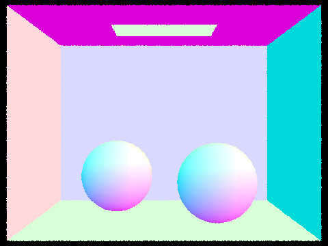
|

|

|
Part 2: Bounding Volume Hierarchy
Walk through your BVH construction algorithm. Explain the heuristic you chose for picking the splitting point.
In constructing the Bounding Volume Hierarchy (BVH), we first determine the number of primitives by calculating
'end - start'. We then approach this with two distinct cases based on whether the number of primitives is greater
than 'max_leaf_size' or less than or equal to 'max_leaf_size'.
In the first scenario, where the primitive count exceeds 'max_leaf_size', we begin by expanding the bounding box
of the internal node and computing the average centroid of the primitives. We then partition these primitives into
two groups based on the x-coordinate of their centroids, using the std::partition() function. Primitives with
centroids having an x-coordinate less than the average are grouped to the left, while the rest fall into the right
group. The function's returned iterator marks the division between these groups, serving as the end iterator for
the left child and the start iterator for the right child. In instances where one group ends up empty and the
other contains all the primitives, we sort the primitives by their centroid's x-coordinate and allocate the first
'max_leaf_size' number of primitives to the left child node, with the remaining assigned to the right child.
Following this partition, we recursively invoke 'construct_bvh' for both the left and right child nodes. The
current node, now fully constructed, is returned as a pointer.
In the second case, applicable when the number of primitives is within or equal to 'max_leaf_size', the node is
treated as a leaf node. We expand its bounding box and set 'node->start = start' and 'node->end = end', allowing
the leaf node to encompass the relevant primitives. This leaf node is then returned as a pointer.
Our heuristic is based on the premise that using the average centroid of the primitives effectively divides them
into two balanced groups, thereby reducing the likelihood of all primitives falling into a single group. In the
event this imbalance does occur, we mitigate it by assigning a 'max_leaf_size' number of nodes with the smallest
x-coordinate centroids to the left child, and the remainder to the right child.
Show images with normal shading for a few large .dae files that you can only render with BVH acceleration.

|
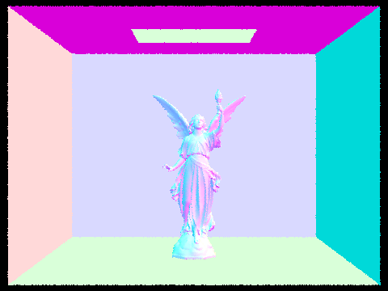
|

|
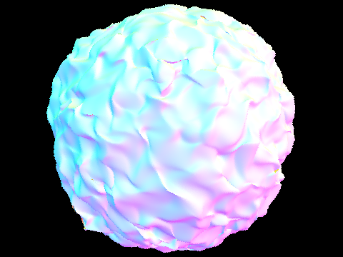
|
Compare rendering times on a few scenes with moderately complex geometries with and without BVH acceleration. Present your results in a one-paragraph analysis.
In our rendering tests, we observed significant performance differences when using the Bounding Volume Hierarchy
(BVH) compared to not using it. For instance, rendering the 'cow.dae' file without BVH took 13.3022 seconds, but
with BVH, it was drastically reduced to 0.5269 seconds. Similarly, the 'maxplanck.dae' file took 138.9985 seconds
without BVH and only 1.3315 seconds with it. The most notable improvement was for the 'CBlucy.dae' file, where
rendering time dropped from 465.9981 seconds without BVH to a mere 0.2980 seconds with BVH.
The reason behind these improvements is rooted in the computational efficiency of the BVH algorithm. Without BVH,
the rendering process involves checking all primitives in the leaf (root) node if the ray intersects with the
bounding box, leading to an O(n) time complexity. In contrast, with BVH, if the ray intersects the root node's
bounding box, the algorithm recursively checks the bounding boxes of the left and right child nodes for
intersections. Ideally, these child nodes split the primitives roughly in half, thus significantly reducing the
number of primitives checked at each step. This recursive division continues down to the leaf nodes, circumventing
the need to check every primitive initially. As a result, the BVH algorithm operates with a more efficient
O(log(n)) time complexity.

|

|
|
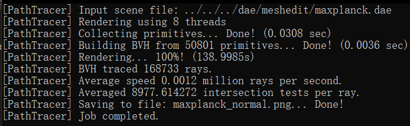
|

|
|
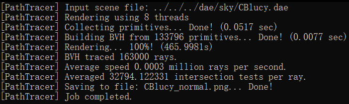
|
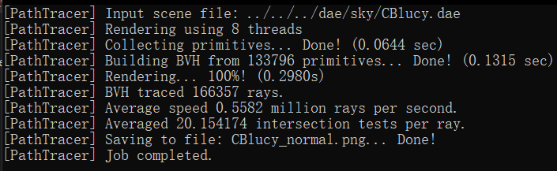
|
Part 3: Direct Illumination
Walk through both implementations of the direct lighting function.
(1) Uniform Hemisphere Sampling
In this approach, we start by constructing a local coordinate system anchored at the intersection point, with the
intersection normals aligned to the z-axis. We then calculate the origin and direction of the emitted light rays,
including the direction of the sample rays from each light source. This involves computing the BRDF function value
at the intersection point and the uniform PDF value of the sampled light.
Light rays are emitted in the direction of the sampled rays, and we check for their intersections with scene
objects. If an intersection occurs, we calculate the corresponding radiance using the get_emission() function,
weighing it with consideration for the angle and PDF. This process is repeated until we reach the predefined
number of samples, after which we average all results to derive the final radiance estimate.
(2) Importance Sampling
This method is akin to uniform hemisphere sampling but with notable differences. When sampling each light source,
we assess the sampled light's position and direction to ascertain if it is obstructed by objects in the scene. In
this case, we prefer that no intersection occurs.
Importance sampling focuses on sampling each light source individually, unlike the hemisphere-wide sampling in the
previous method. This means that the position and direction of the light source, ascertained through sampling, can
be directly used for calculating direct lighting without the need for a coordinate system transformation.
Finally, the sample_L() function is utilized to sample and obtain the radiance, tailored to the specifics of the
importance sampling technique.
Show some images rendered with both implementations of the direct lighting function.
Displayed below are images rendered using uniform hemisphere sampling. The image on the left was produced with settings of 4,4 for -s and -l, respectively, while the image on the right utilized settings of 16 and 8 for -s and -l.
| Uniform Hemisphere Sampling | Importance Sampling |
|---|---|

|
|

|

|
Focus on one particular scene with at least one area light and compare the noise levels in soft shadows when rendering with 1, 4, 16, and 64 light rays (the -l flag) and with 1 sample per pixel (the -s flag) using light sampling, not uniform hemisphere sampling.

|
|
|
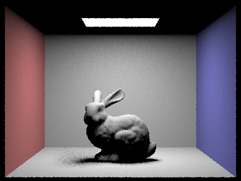
|
|
The images clearly demonstrate that an increase in the -l value leads to a noticeable reduction in noise, resulting in clearer and smoother images. This improvement is attributed to the more comprehensive capture of light source variations achieved by using a greater number of light samples. Such enhanced sampling allows for smoother shadow transitions and more detailed lighting effects, contributing to a more realistic depiction in the images. Consequently, elevating the number of samples per light source substantially enhances the quality of the rendered images, effectively diminishing noise and enhancing clarity and smoothness.
Compare the results between uniform hemisphere sampling and lighting sampling in a one-paragraph analysis.
Upon analyzing the images, we can discern that with an equal number of samples per pixel per unit light area,
importance sampling yields superior results, producing smoother images with notably less noise. This enhanced
performance stems from the fact that importance sampling prioritizes the light source's direction, focusing on
capturing vital information about it. As a result, it effectively converges faster in rendering, concentrating on
the most significant areas and thus reducing image noise more efficiently.
In contrast, uniform hemispherical area sampling might necessitate a higher sample count to reach similar levels
of rendering quality. This is due to its tendency to distribute many samples in less relevant directions, which
can lead to instability in the rendering process. Consequently, in practical applications, opting for light source
sampling typically results in higher rendering efficiency and more stable outcomes, making it a preferred choice
for achieving high-quality renders.
Part 4: Global Illumination
Walk through your implementation of the indirect lighting function.
In this task, we focus on implementing the at_least_one_bounce_radiation() function within the framework of path
tracing. This function is crucial for calculating the radiation value following at least one reflection or
refraction from an intersection point.
Our approach begins by invoking the one_bounce_radiation() function to compute the direct illumination
contribution at the intersection point. Subsequently, the importance sampling method is employed to generate a new
incident ray direction. This step is guided by the BSDF function and a sampler, from which we determine the
sampling probability (pdf) and the value of the BSDF function.
The next phase involves using the Russian Roulette method to decide whether to continue the ray's trajectory. We
calculate the probability of continuation (cpdf) and establish the minimum tracking distance. If the decision is
to proceed, a new ray is constructed. Utilizing the BVH structure, an intersection operation is performed to find
a new intersection point. Provided the conditions for continued tracking are met—namely, the tracking depth is
greater than 1, and the new intersection point is valid—we recursively invoke the function to compute the indirect
illumination achieved from the tracing process.
Ultimately, we obtain the radiation value after at least one reflection or refraction by aggregating the weighted
sums of direct and indirect illumination. This result is then returned, providing a comprehensive measure of the
radiation value in the context of path tracing.
Show some images rendered with global (direct and indirect) illumination. Use 1024 samples per pixel.

|

|
Pick one scene and compare rendered views first with only direct illumination, then only indirect illumination. Use 1024 samples per pixel. (You will have to edit PathTracer::at_least_one_bounce_radiance(...) in your code to generate these views.)

|
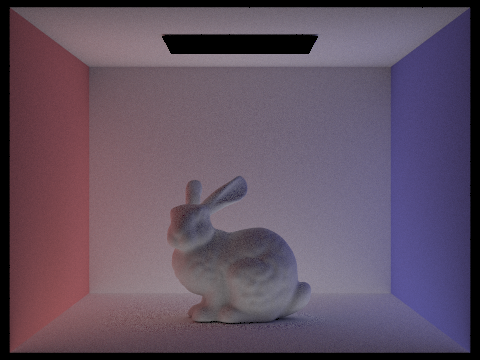
|
From our observations, using only direct illumination results in outcomes similar to those seen in Part 3, characterized predominantly by large shadows. This is primarily due to the lack of consideration for light bounces from other objects. On the other hand, if we rely solely on indirect illumination, the scene disregards the direct light from the light sources. This approach results in rendering the light source on the ceiling as black, and other areas of the scene appear quite dim. This dimness arises because these areas are illuminated exclusively by light that has been refracted or reflected off other objects, lacking any direct light contribution.
For CBbunny.dae, compare rendered views with max_ray_depth set to 0, 1, 2, 3, and 100 (the -m flag). Use 1024 samples per pixel.

|

|

|
|

|
The images clearly demonstrate an increase in brightness correlating with higher max_depth values. At depth 0, the first image in the sequence, the scene is notably dark. This darkness is largely due to the minimal bouncing of rays, resulting in an abundance of shadows. However, as we progress to depths 2 and 3, there is a significant brightening of the rabbit. This enhancement is attributed to the addition of multiple layers of indirect illumination, where the rabbit is illuminated by light reflected and refracted from surrounding objects. At a depth of 100, the impact of indirect illumination reaches near convergence, reflecting what can be considered the final global illumination effect. This depth presents a much brighter and more evenly illuminated scene.
Pick one scene and compare rendered views with various sample-per-pixel rates, including at least 1, 2, 4, 8, 16, 64, and 1024. Use 4 light rays.
|
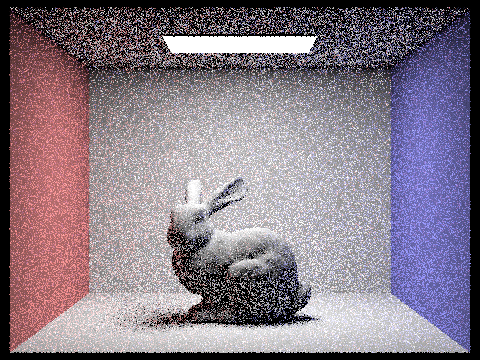
|
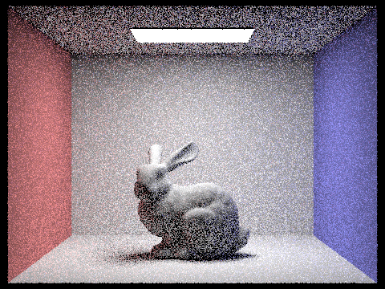
|

|
|
|
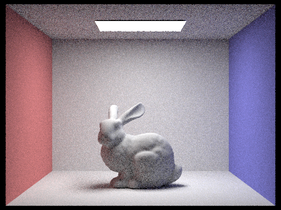
|

|

|
As the sample-per-pixel rate increases, a clear enhancement in image quality is observed, characterized by reduced noise and a smoother overall appearance. However, it's noteworthy that there is no substantial change in either the brightness or the shadows of the image. This phenomenon occurs because adjusting the sample-per-pixel rate affects only the sampling frequency, not the maximum depth of ray bounces, which contrasts with the parameters altered in the previous section. Consequently, since the indirect lighting component remains unaltered, the brightness of the image stays consistent regardless of the changes in sampling rate.
Part 5: Adaptive Sampling
Explain adaptive sampling. Walk through your implementation of the adaptive sampling.
This approach utilizes confidence intervals to assess the quality of pixel sampling in rendering. By calculating
these intervals, it evaluates both the variance and the confidence level of the rendering results. This method
effectively identifies which pixels require additional sampling to reduce variance and increase confidence,
thereby enhancing image quality. Simultaneously, it also pinpoints pixels where the number of samples can be
reduced, conserving computational resources.
In adaptive sampling, the number of samples progressively increases and stops when certain criteria are met. For
this task, sampling ceases when the variance of the sampling results falls below a predetermined tolerance level,
indicating sufficient accuracy.
At each sampling point, the generate_ray() function is employed to produce camera rays. The
est_radiance_global_illumination() function then tracks these rays and accumulates the results. The number of
samples is continuously tallied, and upon reaching multiples of the batch size (samplesPerBatch), we compute the
average and variance of the results. The decision to stop sampling immediately is based on these calculations and
the set tolerance.
Ultimately, we average all sampling outcomes, update these results to the sample buffer, and document the number
of samples for each pixel. This process ensures an efficient rendering approach that balances quality with
computational economy.
Pick two scenes and render them with at least 2048 samples per pixel. Show a good sampling rate image with clearly visible differences in sampling rate over various regions and pixels. Include both your sample rate image, which shows your how your adaptive sampling changes depending on which part of the image you are rendering, and your noise-free rendered result. Use 1 sample per light and at least 5 for max ray depth.
|
|
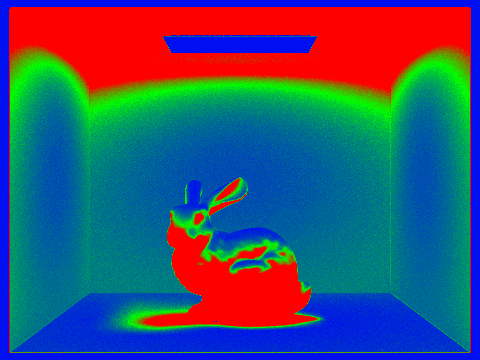
|

|

|
Adaptive sampling effectively enables dynamic adjustment of the number of samples, significantly enhancing rendering speed without compromising on the quality of the results. This method not only reduces noise but also contributes to a smoother appearance in the final images.
Project 3-2: Additional Features to Path Tracer
Overview
In this project, we successfully developed extensions to the Diffuse material from project 3-1, specifically
focusing on Mirror and Glass Materials in Part 1, and an advanced version of the pinhole camera model with the
implementation of Depth of Field using the thin-lens model in Part 4. For the Mirror and Glass Materials, our work
included the incorporation of reflection, mirror material, refraction, and glass material. This implementation
closely followed the instructions, graphical representations of refraction, and equations provided in the project
specifications. A significant challenge we faced was in determining the correct pdf value for the
RefractionBSDF::sample_f function. We overcame this by referencing the MirrorBSDF::sample_f function and
accordingly setting the pdf to 1.
In developing the Depth of Field feature, we concentrated on generating rays for a Thin Lens, adhering to the
thin-lens model diagram and the part 4 specifications. We encountered a challenge where the images rendered were
blurred, even with the correct focal distance. The issue was traced back to our approach in handling the ray's
origin; we had mistakenly used pos as the ray’s origin instead of performing the camera-to-world transformation
for the origin starting from pLens. We resolved this by calculating c2w * pLens + pos to correctly set the ray’s
origin.
Part 1. Mirror and Glass Materials
Show a sequence of six images of scene `CBspheres.dae` rendered with `max_ray_depth` set to 0, 1, 2, 3, 4, 5, and 100. The other settings should be at least 64 samples per pixel and 4 samples per light. Make sure to include all screenshots.
The images are rendered with 64 samples per pixel and 4 samples per light.
|
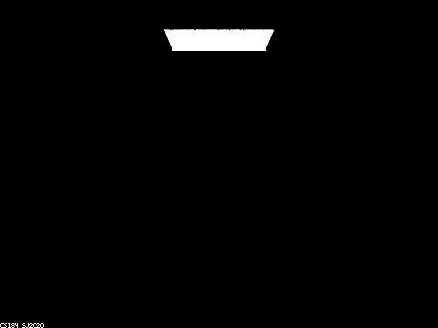
|

|

|

|
|
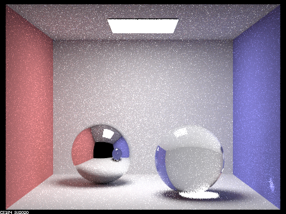
|

|

|
Point out the new multibounce effects that appear in each image.
At max_ray_depth = 0, the scene is predominantly black, with only the area light source visible.
At max_ray_depth = 1, the two spheres appear black, each featuring specular highlights at the top. Overall, the
scene exhibits a certain level of brightness.
At max_ray_depth = 2, the left sphere displays reflections, while the right sphere remains black with specular
highlights on top and a tiny reflection. The ceiling is dark, but the scene is brighter compared to max_ray_depth
= 1.
At max_ray_depth = 3, the left sphere shows reflections, and the right sphere has a small reflection and exhibits
refraction. The ceiling becomes brighter, and the overall scene is more luminous than at max_ray_depth = 2.
At max_ray_depth = 4, both spheres show improved reflections, with the left sphere being noticeably brighter than
at max_ray_depth = 3. The right sphere's refraction is more pronounced, and the entire scene is brighter than the
previous depth.
At max_ray_depth = 5, the reflections on both spheres are well-defined, and the brightness levels increase further
for both the spheres and the overall scene, surpassing the illumination at max_ray_depth = 4.
At max_ray_depth = 100, the scene reaches its peak brightness. Both spheres are well-lit with distinct reflections
and refraction effects, each brighter than at max_ray_depth = 5. The ceiling and overall scene display a
significant increase in brightness from previous depths.
Explain how these bounce numbers relate to the particular effects that appear. Make sure to include all screenshots.
Zero Bounce Illumination: Here, light travels directly to the camera without any interaction with scene objects.
As a result, the scene is predominantly black, except for the visible area light source.
One Bounce Illumination: In this scenario, light reaches the camera after bouncing once off objects in the scene.
The specular highlights on the spheres are a direct consequence of this single bounce. Light from the area light
source reflects off the sphere before being captured by the camera.
Two Bounce Illumination: Light now reaches the camera after two interactions with scene objects. Some light
bounces once in the scene and again off the left sphere, while a smaller amount reflects similarly off the right
sphere. Consequently, the left sphere shows reflections, and the right sphere has a faint reflection.
Three Bounce Illumination: With three bounces, light interacts more complexly within the scene. It bounces off the
ceiling and then twice off the left sphere (once upon entering and once upon exiting), brightening the ceiling
area above the left sphere. Similarly, light bounces off a wall and twice through the right sphere, resulting in
its refraction.
Four Bounce Illumination: At this level, light bounces four times within the scene. It reflects off the wall,
enters and exits the right sphere, bounces off the left sphere, and then reaches the camera. This sequence
brightens the reflection of the right sphere in the left sphere.
Five Bounce Illumination: Five bounces offer more path possibilities for the light emanating from the area light
source. This increased interaction transfers energy to more objects, enhancing indirect illumination and overall
scene brightness.
One Hundred Bounce Illumination: With a hundred bounces, the light from the area source undergoes ninety-five more
interactions compared to five-bounce illumination, creating a multitude of path combinations. However, as energy
dissipates over these numerous bounces, the contribution of higher bounce levels decreases exponentially.
Therefore, while the scene is slightly brighter than in five-bounce illumination, there is an upper limit to this
increase in brightness.
Part 4. Depth of Field
For these subparts, we recommend using a microfacet BSDF scene to show off the cool out of focus effects you can get with depth of field!In a few sentences, explain the differences between a pinhole camera model and a thin-lens camera model.
In the pinhole camera model, everything within the frame is in sharp focus. Rays are projected from the origin (0,
0, 0) towards a specific direction (X, Y, -1). The focal plane is positioned at z = -1. The point on the image
plane that receives radiance, denoted as pFilm, is located at (-X, -Y, 1). Each ray emanating from the plane of
focus traverses through the center of the pinhole and strikes the image plane, ensuring a clear and focused image.
Conversely, in the thin-lens camera model, objects are in focus only when they lie within a plane at the focal
distance from the lens. This model incorporates an aperture, introducing the depth of field effect. Consequently,
the point pFilm does not solely receive radiance from the origin. It can also capture radiance from any point
across the thin lens. By uniformly sampling the lens, which is an aperture with a radius of lensRadius, we obtain
a sampled point on the lens, pLens, at coordinates (sx, sy, 0). Rays passing directly through the center of the
thin lens maintain their direction unaltered. Moreover, rays originating from the same point on the focal plane
are consistently converged to the same point pFilm on the image plane, irrespective of their path through the
lens.
Show a "focus stack" where you focus at 4 visibly different depths through a scene. Make sure to include all screenshots.

|

|

|

|
Show a sequence of 4 pictures with visibly different aperture sizes, all focused at the same point in a scene. Make sure to include all screenshots.
|
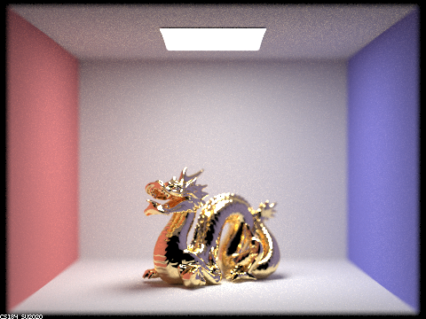
|

|

|
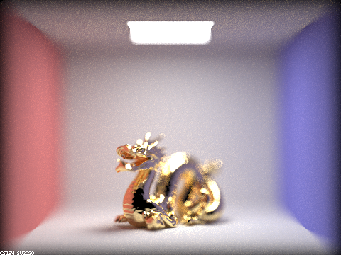
|